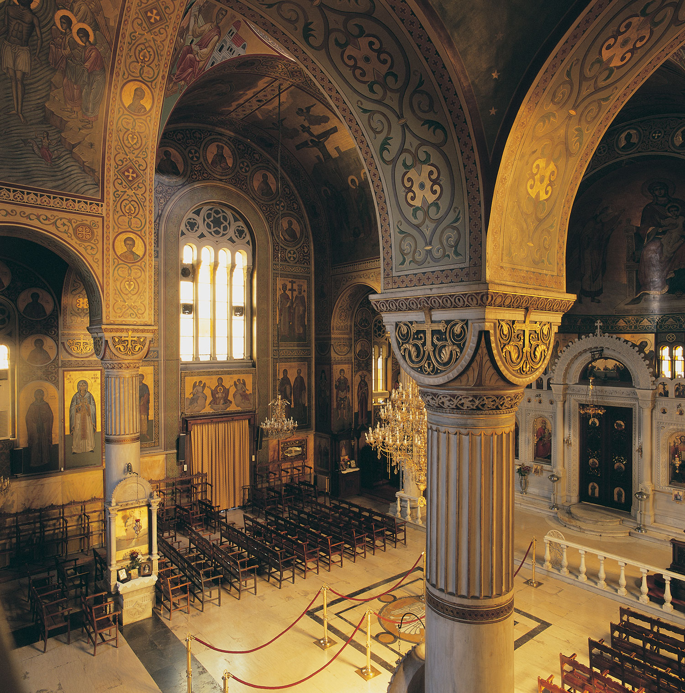

Greece is a country in Southern Europe,bordered to the north by Albania, North Macedonia and Bulgaria; to the east by Turkey, and is surrounded to the east by the Aegean Sea, to the south by the Cretan and the Libyan Seas, and to the west by the Ionian Sea which separates Greece from Italy. The country consists of a mountainous, peninsular mainland jutting out into the Mediterranean Sea.
Greece also has many islands, of various sizes, the largest being Crete, Euboea, Lesvos, Rhodes, Chios, Kefalonia, and Corfu.
Western Thrace is a geographic and historical region of Greece, between the Nestos and Evros rivers in the northeast of the country; East Thrace, which lies east of the river Evros, forms the European part of Turkey, and the area to the north, in Bulgaria, is known as Northern Thrace. Inhabited since paleolithic times, it has been under the political, cultural and linguistic influence of the Greek world since the classical era;[2][3] Greeks from the Aegean islands extensively colonized the region (especially the coastal part) and built prosperous cities. home of Democritus, the 5th-century B.C. philosopher who developed an atomic particle theory, and of Protagoras, a leading sophist.
Continental Greece, colloquially known as Roúmeli, is a traditional geographic region of Greece. In English the area is usually called Central Greece, but the equivalent Greek term is more rarely used. It includes the southern part of the Greek mainland (sans the Peloponnese), as well as the offshore island of Euboea. Central Greece is the most populous geographical region of Greece, with a population of 4,591,568 people, and covers an area of 24,818.3 km², making it the second largest of the country. It is located to the north of the Peloponnese and to the south of Thessaly and Epirus, bordering the Aegean Sea to the east, the Ionian Sea to the west and the Corinthian Gulf to the south. Its climate is temperate along its coastlines, and dry in the interior.
Crete is the largest island in Greece and the fifth largest island in the Mediterranean Sea. It is located in the southern part of the Aegean Sea separating the Aegean from the Libyan Sea. Crete forms a significant part of the economy and cultural heritage of Greece, while retaining its own local cultural traits (such as its own poetry and music). It was once the centre of the Minoan civilisation (c. 2700–1420 BC), which is the earliest known civilisation in Europe. The palace of Knossos lies in Crete.The island is first referred to as Kaptara in texts from the Syrian city of Mari dating from the 18th century BC,repeated later in Neo-Assyrian records and the Bible (Caphtor). It was also known in ancient Egyptian as Keftiu, strongly suggesting a similar Minoan name for the island. The current name of Crete is thought to be first attested in Mycenaean Greek texts written in Linear B, through the words ke-re-te. In Ancient Greek, the name Crete first appears in Homer's Odyssey.Its etymology is unknown. One proposal derives it from a hypothetical Luwian word, *kursatta.

The Cyclades are an island group in the Aegean Sea, southeast of mainland Greece and a former administrative prefecture of Greece. They are one of the island groups which constitute the Aegean archipelago. The name refers to the islands around the sacred island of Delos. The largest island of the Cyclades is Naxos. The significant Late Neolithic and Early Bronze Age Cycladic culture is best known for its schematic, flat idols carved out of the islands' pure white marble centuries before the great Middle Bronze Age Minoan civilization arose in Crete to the south. A distinctive Neolithic culture amalgamating Anatolian and mainland Greek elements arose in the western Aegean before 4000 BCE, based on emmer and wild-type barley, sheep and goats, pigs, and tuna that were apparently speared from small boats (Rutter). Excavated sites include Saliagos and Kephala (on Kea) with signs of copperworking, Each of the small Cycladic islands could support no more than a few thousand people, though Late Cycladic boat models show that fifty oarsmen could be assembled from the scattered communities (Rutter), and when the highly organized palace-culture of Crete arose, the islands faded into insignificance, with the exception of Delos, which retained its archaic reputation as a sanctuary throughout antiquity and until the emergence of Christianity.
The first written Greek letters were found on baked mud tablets, in the remains of the Minoan Knossos Palace of Crete island. This language is known as Linear A and it has not been fully decoded till today. The most famous example of Linear A is written in the famous Phaestos Disc. In the 12th century BC, a new language started to develop, called Linear B, where each drawing symbol is a consonant-vowel combination. Linear B dates from the Mycenaean civilization. In the late 9th and early 8th century BC, the language found was based on the Phoenician syllabary, written from left to right and back again.
During the Classical period (6th-4th century BC), the territory of Greece was divided in numerous states and each one had its own dialect. The two more important dialects were the Ionic and the Attic. During this period, Athens established itself as the political, economical and cultural centre of the Greek world, and therefore the Attic idiom started to be used as a common language.
After the expeditions of Alexander the Great, Attic dialect was also expanded in the depths of the East and it was spoken by millions of people. This gradually led to a mixing dialect which was the beginning of the koine, or common dialect, mostly known as the Hellenistic koine. This type of language survived through centuries and became an official language of the Roman Empire later on. The koine is the original language of the New Testament and the basis for the development of Medieval and Modern Greek. This language was developed all through the Byzantine times.
With the creation of the modern Greek State in 1829, the question of the language, as an important part of the nation-building process, had to be resolved. After about 4 centuries of Ottoman occupation, Greece had mostly an oral culture due to all these centuries of different dominations. The question was the choice of language used in administration and education. One of the suggestions, to re-use the Attic language, was very attractive, especially because all the Western Europe was charmed by the Ancient Greek culture, and it would have been a great stimulus for the philhellenes. It proved impossible from a practical point of view.
So, the Greek scholar Adamantios Korais (1748-1833), suggested to reform the spoken language of those times on ancient principals. This suggestion was accepted and the katharevoussa (meaning purified language) was created. The theme became politicized: a distinction rose between the katharevoussa, which became the high-style language associated with official functions such as governmental affairs, education and religion, and the dimotiki language (popular language) used by common people in their everyday life. Source: www.greeka.com
In the 20th century, the Greek language debate took a huge political significance: academics were sacked for using dimotiki, riots were taking place in the streets and a lot of people were claiming that katharevoussa was being used as an instrument of denying access to education to the common people. Nationalist governments like the dictator of the Junta, Ioannis Papadopoulos, favoured katharevoussa. The struggle between the proponents of dimotiki and katharevoussa riased various social attitudes and political positions.
The theme was eventually solved in 1976, with actions of the after dictatorship government. Dimotiki language was adopted in education and administration and it has been kept since then as the formal language of modern Greece. The last thing worth mentioning is that most regions in Greece have their local oral dialects, never used as writing means. Every region has of course its local accent.
The religion of Greek people is an important aspect of the Greek culture. The Greek population in mainland Greece and the Greek islands is Christian Orthodox per 98%. The religion of rest of the population is Muslims, Catholic and Jewish. Greece and Russia are the only countries to have such a great proportion of Orthodox population. The Orthodox Church forms the third largest branch of Christianity, after the Roman Catholics and the Protestants. You will find bellow information about the history of Orthodox religion in Greece.
According to the history of Orthodoxy, the first who came in the Greek territory to preach Christianity was Saint Paul in 49 AD. Although many people converted to Christianity in the centuries that followed, this didn't become an official religion until the Emperor Constantine the Great established Christianity as the official religion of the Byzantine Empire.
In 1054 AD, Christianity was divided in Eastern and Western Church, the Orthodox and the Catholics. This division was called "The Schism" and was the result of long disputes between the Pope of Rome and the Patriarch of Constantinople. The disputes referred to the celibacy of the clergy (Catholic priests had to remain unmarried, whereas the orthodox priests could marry before becoming ordained), receiving the Holy Communion and the wording of the Creed: for the Orthodox the Holy Spirit proceeds from the Father, whereas Rome added and the Son (filioque). However, the largest problem between the two Churches was the demand of the Pope to have full control over the Eastern Patriarchs (of Constantinople, of Alexandreia and of Antioche).
As mentioned, 98% of the Greek population is Christian Orthodox. A percentage of 1,3% are Greek citizens of Muslim religion, mostly people living in Thrace who were not affected by the population exchange of 1922 between the Greeks of Asia Minor and the Turks of Greece. The rest 0,7% are Catholics, Jewish, Jehovah's Witnesses and others. Most Catholics live on the island of Syros, a remain from the Venetian occupation of Cyclades in the Medieval times.
Music in Greece is of unbelievable diversity due to the creative Greek assimilation of different influences of the Eastern and Western cultures of Asia and Europe. Music is an important aspect of the daily Greek culture. It has a long history dating from the Antiquity, during which poetry, dancing and music were inseparable and played an important part in the ancient Greek's everyday life. The Greek tragedy used music as one of its component elements. Then, with the fall of Ancient Greece and the evolution of the Byzantine Empire, Greece music got a more ecclesiastical approach. In the 400 years of Ottoman domination, it was influenced by the eastern sounds. It got reborn only in the 19th century with the opera compositions of Nikolaos Mantzaros (1795-1872) and Spyros Samaras (1861-1917). From that moment on, Greece produced many talented artists, including great composers to fabulous interprets. Music in Greece became an expression and a testimony of the slavery years, a weapon of opposition against the colonel authority and a way to express love, death, human fears, that accompanied the Greeks in their everyday life.
Greek folk song sees its origins coming from the time of ancient Greek poetry and music. It can be divided into two musical movements: the akritic and the klephtic. The akritic style dates from the 9th century AD and it was created to express the life and struggles of the frontier guards of the Byzantine Empire, the "akrites". The klephtic style was born between the end of the Byzantine period and the beginning of the Greek Revolution that led to the Greek Independence in 1821. This style was created by the "kleftes", the heroes who left to live in the mountains, leading a revolutionary action against the Ottoman tyranny. The klephtic musical style is monophonic, with second voices repeating a given rhythmical formula, without any harmonic accompaniment. It is composed by love songs, wedding songs, songs of exile, songs of freedom, death and sorrows. It expresses an important, bloody part of the history and the life of the akrites.
Musical instruments used in Greek folk songs are the lira and laouto (lute), the tambouras and gaida (bagpipe), the zournas (shawm), the daouli (drum), the dachares (tambourine), the ziyia (paired groups) and the violi (violin).
Originated from Kefalonia island and created at the beginning of the 19th century, it is a style of romantic serenade music, sung with three male voices in chorus, accompanied by guitar or mandolin. This style had been influenced by the Italian music and soon gained all the Ionian Islands and the rest of Greece. In Athens, the cantadha is a little different, accompanied with a compania composed of violin, clarinet and laouto.
This kind of popular songs was born in the Greek islands. Every island has its own nissiotiko style and its own way of dancing it. Violin, lira, clarinet and guitar accompany the high-pitched women voices or the low voice of a single man. Nissiotika are still easy to listen in every festival on any Greek island, during which a huge group of musicians play life music during the whole night.
This particular and famous style of music in Greece was born in the hashish dens and the tekedes, the Turkish style underground cafes of the district of Piraeus and the city of Thessaloniki. Rembetiko music was spread by the two million Greek refugees coming from Asia Minor in 1922, after the destruction of Smyrne by the Turks. Homesick and rejected by the Greek population, those Greeks who had never lived in Greece and who had lost everything, sang about their surroundings, poverty, pain, hunger, prison, police oppression, drug addiction, betrayal and hashish. Rembetiko was the forbidden music of the outcast, the Greek urban blues.
The rembetiko slowly in the 1950s came out of the underground world and started to be played in the nightclubs of Athens, were it became very popular, even if it was despised by the Greek people because they saw it as an outcast music. The principal instruments of the rembetiko are the bouzouki, an eight string oval-shape instrument, the baglama, which looks like a miniature bouzouki, and the guitar as well as, for accompaniment, the ziyia and the ntefi, a leather small tambourine with little metallic plates circling it.
Some of the greatest and most famous players and singers are Vassilis Tsitsanis, Markos Vamvakaris, Marika Ninou and Sotiria Bellou. During the 1960s, the rembetiko became unpopular again. Young people preferred the new rock music coming from the West and the oldest one started listening again to the candhades of the 1920s. But this music styles is back in the trends and many taverns propose rebetika music bands during week-ends.
The origins of Greek theatre lie in the revels of the followers of Dionysus, a god of fertility and wine. In keeping with the god's special interests, his cult ceremonies are exciting occasions. His female devotees, in particular, dance themselves into a state of frenzy. Carrying long phallic symbols, known as thyrsoi, they tear to pieces and devour the raw flesh of sacrificial animals. But the Dionysians also develop a more structured form of drama. They dance and sing, in choral form, the stories of Greek myth.
In the 6th century BC a priest of Dionysus, by the name of Thespis, introduces a new element which can validly be seen as the birth of theatre. He engages in a dialogue with the chorus. He becomes, in effect, the first actor. Actors in the west, ever since, have been proud to call themselves Thespians. According to a Greek chronicle of the 3rd century BC, Thespis is also the first winner of a theatrical award. He takes the prize in the first competition for tragedy, held in Athens in 534 BC. Theatrical contests become a regular feature of the annual festival in honour of Dionysus, held over four days each spring and known as the City Dionysia. Four authors are chosen to compete. Each must write three tragedies and one satyr play (a lascivious farce, featuring the sexually rampant satyrs, half-man and half-animal, who form the retinue of Dionysus)
The performance of the plays by each author takes a full day, in front of a large number of citizens in holiday mood, seated on the slope of an Athenian hillside. The main feature of the stage is a circular space on which the chorus dance and sing. Behind it a temporary wooden structure makes possible a suggestion of scenery. At the end of the festival a winner is chosen.
Only a small number of tragedies survive as full texts from the annual competitions in Athens, but they include work by three dramatists of genius. The earliest is the heavyweight of the trio,Aeschylus. Aeschylus adds a second actor, increasing the potential for drama. He first wins the prize for tragedy in 484 BC. He is known to have written about eighty plays, of which only seven survive. One of his innovations is to write the day's three tragedies on a single theme, as a trilogy. By good fortune three of his seven plays are one such trilogy, which remains one of the theatre's great masterpieces - the Oresteia, celebrating the achievement of Athens in replacing the chaos of earlier times with the rule of law. Sophocles gains his first victory in 468 BC, defeating Aeschylus. He is credited with adding a third actor, further extending the dramatic possibilities of a scene. Whereas Aeschylus tends to deal with great public themes, the tragic dilemmas in Sophocles are worked out at a more personal level. Plots become more complex, characterization more subtle, and the personal interaction between characters more central to the drama.
Although Sophocles in a very long life writes more plays than Aeschylus (perhaps about 120), again only seven survive intact. Of these Oedipus the King is generally considered to be his masterpiece. The youngest of the three great Greek tragedians is Euripides. More of his plays survive (19 as opposed to 7 for each of the others), but he has fewer victories than his rivals in the City Dionysia - in which he first competes in 454 BC. Euripides introduces a more unconventional view of Greek myth, seeing it from new angles or viewing mythological characters in terms of their human frailties. His vision is extremely influential in later schools of tragic drama. Racine, for example, derives Andromaque and Phèdre from the Andromache and Hippolytus of Euripides.
From 486 BC there is an annual competitition for comedies at Athens - held as part of the Lenaea, a three-day festival in January. Only one comic author's work has survived from the 5th century. Like the first three tragedians, he launches the genre with great brilliance. He is Aristophanes, a frequent winner of the first prize in the Lenaea (on the first occasion, in 425 BC, with the Acharnians). Eleven of his plays survive, out of a total of perhaps forty spanning approximately the period 425-390 BC. They rely mainly on a device which becomes central to the tradition of comedy. They satirize contemporary foibles by placing them in an unexpected context, whether by means of a fantastic plot or through the antics of ridiculous characters.
A good example is The Frogs, a literary satire at the expense of Euripides. After the death of the great man, Dionysus goes down to Hades to bring back his favourite tragedian. A competition held down there enables Aristophanes to parody the style of Euripides. As a result Dionysus comes back to earth with Aeschylus instead. In The Wasps the Athenian love of litigation is ridiculed in the form of an old man who sets up a law court in his home, to try his dog for stealing cheese. In Lysistrata the horrors of war are discussed in a circumstance of extreme social crisis; the women of Greece refuse to make love until their men agree to make peace.
An exclusively Greek contribution to architectural history is the raked auditorium for watching theatrical performances (appropriately, since the Greeks are also the inventors of theatre as a literary form). The masterpieces of Greek drama date from the 5th century BC. At that time, in Athens, the audience sit on the bare hillside to watch performances on a temporary wooden stage. In the 4th century a stone auditorium is built on the site, and there is still a theatre there today - the theatre of Dionysus. However this is a Roman reconstruction from the time of Nero. By then the shape of the stage is a semi-circle.
In the first Greek theatres the stage is a full circle, in keeping with the circular dance - the choros - from which the theatrical performance has evolved. This stage is called the orchestra (orchester, a dancer), because it is the place where the chorus sing and dance. Epidaurus, built in about 340 BC, provides the best example of a classical Greek theatre. In the centre of the orchestra is the stone base on which an altar stood, reflecting the religious aspect of theatre in Greece. The rising tiers of seats, separated by aisles, provide the pattern for the closest part of the auditorium to the stage in nearly all subsequent theatres - where these seats are still sometimes called the orchestra stalls.